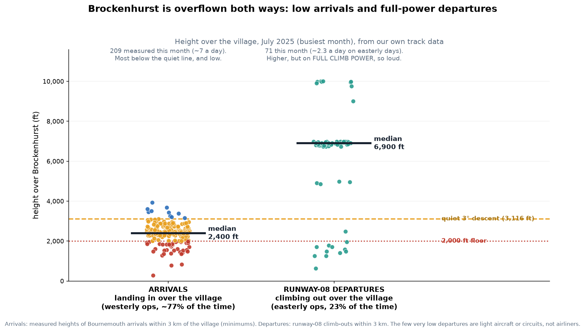
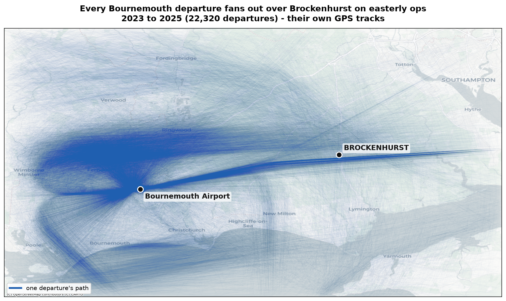

Brockenhurst sits on the extended centreline of runway 08/26, so it is overflown both ways: by arrivals landing in from the east when the airport works westerly (about 77% of the time), and by departures climbing out east on the other 23%. We measured both from our own track data for the busiest month.

The AIP already routes runway-08 departures on a 075° track, straight at Brockenhurst, out to 5.6 DME before they turn. Today they turn before reaching the village (5.6 versus 9.7 miles), which spreads the noise out. Their height is less of an issue than arrivals, but the full-power climb makes each one loud.
Every Bournemouth departure across three years, drawn from the aircraft's own GPS. The westerly departures fan away to the north-west, but the runway-08 climb-outs form a distinct corridor running straight from the airport over Brockenhurst. Today they spread out as they turn; the concern is what a precise satellite route would do to that corridor.

The risk under the new design. Satellite (PBN) routes are hyper-precise. A fixed departure route locked on that 075° line would remove today's dispersion and concentrate a full-power departure stream directly over the village, on top of the arrivals. As the airspace is redrawn through UKADS, our ask is simple: no concentrated PBN departure route over Brockenhurst on easterly ops.
Method: runway-08 departures identified from their easterly climb track, and counted where they pass within 3 km of the village. Heights are measured minimums. The handful of very low departures are light aircraft or circuit traffic, not airliners.